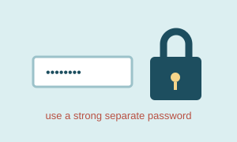
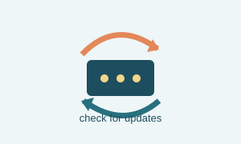
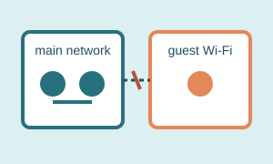

Page three
Security habits that make sense
Security is not one switch. It is a group of ordinary habits that reduce the number of easy mistakes.
Three starting habits
Use separate passwords
The router administrator password should not be the same as the Wi-Fi password or an email password.
Update the equipment
Firmware updates can fix bugs and security problems. I check for updates instead of assuming the device handles everything forever.
Keep guests separate
A guest network is useful for visitors and for devices that do not need access to computers or storage on the main network.
Security at a glance



A quick checklist
My current comfort level
7 out of 10
7 out of 10 — organized, but still learning.
- Automatic updates are turned on when available.
- Unused remote administration is turned off.
- Important settings are written down somewhere safe.
A reminder I keep in mind
The most useful security settings are often the ordinary ones: change default passwords, install updates, and turn off features that are not being used. That advice is easy to overlook because none of it feels dramatic, but it makes a real difference over time.
My small maintenance routine
Every few weeks, I sign in to the network equipment and look for update notices, unfamiliar devices, and settings that have changed. I also check whether the guest network is still separate from the main network.
After changing a setting, I test one wired device, one wireless device, and a website that I use often. That short test gives me confidence that the network still works normally before I move on to something else.